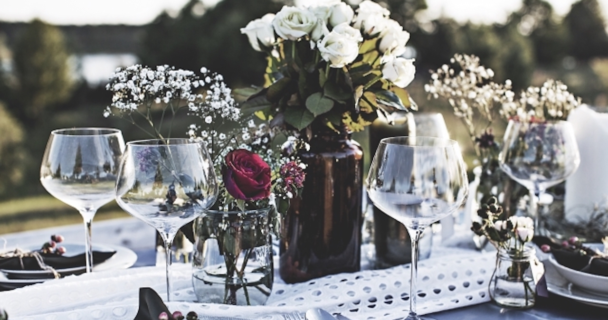

演じるにあたって
２．主要キャラクターのイメージはサイトTOPよりご覧いただけます。
３．()は漢字の読み方、または、キャラクターセリフ中の動作を表現します。
４．ーーXXX は状況や動作を表現するト書きです。
５．ーーーーー はシーン転換や間を開けることを意味します。
元魔王 旅人 年齢：数千歳
魔王の娘 年齢：１１
劇団の女優 踊り子 年齢：２２歳
神兵団筆頭騎士 神の力 年齢：４６歳（体は２０歳前後）
演劇団の座長 元魔物 年齢：数百歳
金と権力の神 年齢：数万数千歳
神兵団の一員 年齢：二十歳前後

ヴェル：（Ｍ）私たちの４日間はあっという間に過ぎていった。公演には思わぬ数の人が訪れ、千秋楽の日は大劇場が満席となり、立見の者もおったという。
オレンド：（劇団員に向かって）それではー！俺たちの大成功とー！
シャンディ：（劇団員に向かって）大儲けを祝してー！
オレンド：（劇団員に向かって）かんぱーい！（酒を一気に飲んで）うはーー！はっはっはー！最高だなぁ！ぐっどぐっど！
シャンディ：くー！これよこれー！！
ーー
ーーイーラとヴェルは二人で端っこに座っている。
ーー
イーラ：ね、ヴェル？
ヴェル：どうした。イーラよ。
イーラ：私もかんぱいしていい？
ヴェル：ほう。かまわん。
イーラ：見ててね！・・・よーし。（ジュースを飲み干す）・・・ぷはー！
ヴェル：ふむ。どうだ、イーラよ。
イーラ：ふー！かんぱいおいしー！
ヴェル：そうか。
イーラ：ねっねっ、ヴェルはやらないの？かんぱい！
ヴェル：・・・ふむ。
イーラ：みせて、みせて！
ヴェル：では、乾杯・・（お酒を飲み干す）・・・はぁ。ほう、酒などいつぶりだろうか。
イーラ：おいしい？かんぱいおいしい？
ーーオレンド離れたところでお酒を飲んでいる
オレンド：（劇団員に向かって少し離れたところで）ほーれのめのめー！はっはっはー！さぁ！そっちもそっちもぉ！おぉ！なんだぁ、お前も飲みたがりだなぁ！はっはっはー！よし、みんなでーいくぞー！かんぱーい！（お酒を一気に飲んで）うはーー！
ヴェル：ふむ。なかなか、良き味である。
イーラ：にへへ。オレンド、楽しそうだね。
ヴェル：うむ。
イーラ：ヴェルは楽しい？こういうの好き？
ヴェル：わからん。が、浮かれているオレンドを見て、嬉しい、と思っておる。
イーラ：そっか！
ーーシャンディが来る
シャンディ：ヴェルさーん！グラスが空いてるわよー！
イーラ：あっ！シャンディ！
シャンディ：たくさん飲んでってねー・・・（注ぎ終わったグラスを手渡す）はい、ヴェルさんどうぞー。はーい、イーラちゃん、お疲れ様。
イーラ：ねっ！ヴェル！シャンディともかんぱいしていい？
ヴェル：かまわん。
イーラ：やった！
ヴェル：が、あまり多く飲むと、腹を下す。気をつけるのだ。
イーラ：だいじょーぶ！
ヴェル：・・・ふむ。
シャンディ：あらぁ！イーラちゃん、私と乾杯してくれるの？じゃぁー、何か注ぎましょうか？
イーラ：あ、そうだった。うーん。
シャンディ：オレンジのジュースでいいかしら？
イーラ：うん！
シャンディ：うふふ・・・はい、どうぞ。
イーラ：ありがとー！
シャンディ：はい、じゃあイーラちゃん、かんぱーい！
イーラ：かんぱーい！
ーー乾杯は二人一緒でも、順番でも。
シャンディ：（お酒を一気に飲んで）くうー！いいわぁ！
イーラ：（ジュースを一気に飲んで）ぷはぁー！・・・ふう。
シャンディ：ふふふ、イーラちゃん、乾杯楽しい？
イーラ：うん！楽しい！
シャンディ：そう！よかったよかったー！大人になったわねー！
イーラ：えへへ、そう！大人でしょ！
シャンディ：うんうん！おとな、おとな！
イーラ：えへへ。
シャンディ：ヴェルさんも楽しんでるかしら？
ヴェル：ふむ。愉快である。
シャンディ：ふふふ、それならよかったわ。さてと、それじゃあ私もみんなのところ戻るから、二人とも楽しんでいってね！
イーラ：うん！
ヴェル：ふむ。感謝する。
ーーシャンディが離れていく
シャンディ：ふふふ。・・・（劇団員に向かって）おっしゃー！飲むわよー！私もまぜなさーい！
イーラ：シャンディも元気だね！
ヴェル：あれほど、くたびれておったのに、宴とは不思議なものだ。
イーラ：みんな楽しそう！いいなぁー！
シャンディ：あっははは！踊りはね、腰をこう、こうするのよ！うっふふふ！ほら！お酌が欲しい人は私のことを褒めなさーい！さぁー！！
イーラ：シャンディ・・・元気だね・・・
ヴェル：うむ。
ーーオレンドが来る
オレンド：ゔぇええるうう！！
ヴェル：オレンドか。
イーラ：オレンド！
オレンド：おぉ！イーラぁ！楽しんでるかー！！
イーラ：うん！
オレンド：そーかー！ぐっどぐっどー！いんやー！終わったなぁ！
イーラ：ねっ！ねっ！オレンドもかんぱいしよ！
オレンド：おぉー！ませてんなぁ！はっはっはー！じゃあサービスしちゃうぜー！ほらほらー！
ヴェル：オレンドよ、それは酒か。
オレンド：およ？はっはっはー！そうだったそうだったー！間違えちゃったぜー！イーラ、俺が代わりに飲むから、それくれよー！
イーラ：ねっ！お酒ってどんな味なの？
オレンド：ん？んー・・・ちょっと苦いかなぁ！
イーラ：そうなの？ね、ヴェル、飲んでみたい！
ヴェル：・・・ふむ。イーラよ、慣れていないと辛い目を見るぞ。
イーラ：大丈夫！
ヴェル：・・・ほう。何事も経験か。
オレンド：おぉ！やる気まんまんなイーラだなぁ！じゃあじゃあ、ゔぇええるもほら！一緒に乾杯しよーぜー！なみなみ注いでやるからよー！はっはっはー！
ヴェル：ふむ。では。
オレンド：それじゃ、準備はいいかー！
イーラ：うん！
オレンド：俺たちの運命の出会いと、イーラの初アルコールを祝してえ、かんぱーい！！
イーラ：イーラ（ごく）・・・うっ
ヴェル：（ごくごく）・・・ふむ。
オレンド：（ごくごく）・・・うっはー！
イーラ：・・・（ごくごく）・・・
ヴェル：イーラよ、無理はしないことだ。
イーラ：（ごくごく）・・・ぷはぁ・・・やっと終わったぁ・・・。
オレンド：おぉー！すげーなぁー！
ヴェル：どうだ。
イーラ：・・・まずい。
オレンド：この旨さがわかるのはもうすこーし大人になってからだなぁ！でも、ナイスファイトだぜ！ぐっどぐっどー！
イーラ：ふぇ？頑張った？
オレンド：おーよ！頑張ったぜー！
イーラ：えへへ
オレンド：そうだ！脚本家のイーラ先生もみんなと一緒におどらねーかー！？
イーラ：え？いいの？・・・でも・・・
オレンド：恥ずかしがらなくて大丈夫さ！（ちょっと離れたシャンディへ向かって）おーい！シャンディー！
シャンディ：なーにー！あ、イーラちゃん、一緒に踊るー？
イーラ：えっ、私踊り方知らないから・・・。
オレンド：大丈夫さー！祝杯の振り付けなんか、俺だってしらねーさ！！はっはっはー！
イーラ：そうなの？
オレンド：そうさぁー！いこーぜいこーぜ！
イーラ：じゃ、じゃぁ！いく！
シャンディ：いーらちゃーん！おいでおいでー！
オレンド：はっはっはー！・・・おっと、忘れるところだった！そういや、ヴェル！
ヴェル：どうした、オレンドよ。
オレンド：魔大陸に渡るんだろー？
ヴェル：そうだ。
オレンド：行き方は知ってるのかー？
ヴェル：ふむ。１０年前は。
オレンド：そっかそっか。今はよ、魔大陸に渡る船はこの辺だと、バルミスの港から出てる。
ヴェル：ふむ。
オレンド：でよ、でよー！バルミスにいる俺のお友達がちょうどこの街にいてさー！
ヴェル：ほう。
オレンド：頼んどいたからよー！はっはっはー！明日紹介するさー！
ヴェル：ふむ。感謝する。
オレンド：おーよー！気が効くだろー！
ーー遠くからイーラとシャンディが声を掛ける
イーラ：（ちょっと遠くから）ヴェルー！オレンドー！
シャンディ：（ちょっと遠くから）二人共ー！一緒に踊りましょー！
オレンド：（二人へ向かって）はっはっは！おーけーおーけー！いまいくぜー！・・・おっし、んじゃぁ！
ヴェル：・・・ふむ。
オレンド：ゔぇええるもいくぞー！みんな一緒さー！なぁー！
ヴェル：ほ、ほう。
ーーーーー
ーーシャンディと踊るヴェル
ーーーーー
イーラ：ぷ、ぷくく。
オレンド：（大笑い）あっはっはっはー！なんだそりゃゔぇるよー！あっはっは！
シャンディ：（笑いを堪えながら）ほ、ほらヴェルさん、そっちじゃ、ないのよ。そう、そう、い、いい感じ！
ヴェル：私は、聞いた通り、踊っているつもりだが。
オレンド：（大笑い）そりゃ！一生懸命にはよー！あっはっは！見えるけどよお、あっはっは！
イーラ：（笑いながら）ヴェ、ヴェル、かっこいいよ！
シャンディ：（笑いを堪えながら）わかるけど！な、なんでヴェルさん・・・ぷくく、ひ、膝が・・・曲がらないのよ・・・あっははははは！
ヴェル：・・・ふむ。私にも、わからん。
シャンディ：（ひとしきり笑って）はー・・・はい、ヴェルさん、エスコートありがとう。
ヴェル：ふむ。私こそ、手解きを感謝する。
シャンディ：ふー・・・じゃあ、オレンド、私たちも踊りましょうか！
オレンド：お！いいぜー！ぐっどぐっどー、ほら（手を出す）
シャンディ：あら？エスコートしてくれるのかしら？
オレンド：勿論さー！
ヴェル：・・・ふむ、イーラは良いのか？
イーラ：う・・・
ヴェル：どうした、イーラよ。
イーラ：ヴェル・・・お腹、痛い・・・。
ヴェル：ふむ。
ーーーーー
ーー酔っ払ってヴェルにおんぶされているイーラ
ーーーーー
ヴェル：（Ｍ）宴は一晩中続くようだった。日はとうに沈み、穏やかな街の明かりが灯っている。慣れぬ酒に酔ったイーラを連れて、私は一足先に抜け出したのだ。
ヴェル：イーラよ、大丈夫か。
イーラ：うー・・・ひっく・・・。ヴェルぅ・・・。
ヴェル：ふむ。
イーラ：私は・・・ひっく・・・まだ踊れるもん・・・。
ヴェル：わかった、わかった。
イーラ：むー・・・信じてないなぁ。
ヴェル：ふむ。
イーラ：おろしてー・・・
ヴェル：よく休むと良い。
イーラ：おーろーしーてー・・・
ヴェル：ふむ。では。
イーラ：やっぱりだめー・・・ひっく・・・このままがいいー。
ヴェル：そうか。
イーラ：ねっ、ヴェル。
ヴェル：どうした。イーラよ。
イーラ：・・・にへへ（腕に力を込めて抱きつく）。ねっ、ねっ・・・ひっく・・・楽しかったね。
ヴェル：うむ。私も久しく忘れていた。
イーラ：え？・・・踊りのこと？・・・えへへ・・・ヴェルの踊り、面白かったなあ。
ヴェル：ふ、ふむ。踊りは元々覚えがない。酒の席のことだ。
イーラ：えへへ、そっか。・・・ヴェルは久しぶりだったのね・・・ひっく。
ヴェル：そうだ。
イーラ：私はね、初めてだった！
ヴェル：そうか。
イーラ：とってもね、楽しかったよ。
ヴェル：そうか。よかった。
イーラ：うん・・・えへへ・・・ねっ、夜なのに、街が明るいね。
ヴェル：日が沈んだ後も至る所で、まだ商（あきな）いが行われているのだろう。
イーラ：なんだか・・・優しい夜だね。
ヴェル：ほう・・・優しいか。
イーラ：うん・・・えへへ。
ヴェル：ふむ。
イーラ：・・・ひっく・・・冒険ってこんなに楽しいんだなぁ・・・。
ヴェル：そうだな。そなたの母も、よく好んでおった。
イーラ：そっかぁ・・・ひっく・・・ねっ、ヴェル。
ヴェル：どうした。
イーラ：んー・・・ママと私、どっちが好き？
ヴェル：・・・難しいな。どちらも、大切だ。
イーラ：ふーん、そっかー・・・ひっく・・・
ヴェル：・・・ふむ。
イーラ：だめ。どっちか選んでー！
ヴェル：・・・
イーラ：ねえー！
ヴェル：難しいな。選べと言われればイーラが大切だ。
イーラ：へ？
ヴェル：私だけではない。そなたの母も、イーラを大事に思っておるからな。そして今の私と共に旅をしているのはイーラである。感謝している。
イーラ：んー。そっか・・・にへへ。・・・ひっく・・・すきー、ヴェルすきー。
ヴェル：ふむ。して、イーラよ。
イーラ：なあに？・・・ひっく・・・
ヴェル：酒はしばらく控えることだ。
イーラ：・・・えへへ・・・うん・・・ひっく。
ーーーーー
ーー翌朝
ーーーーー
ヴェル：では、長旅世話になったな。
オレンド：おーよー！俺たちこそ、一緒に旅ができて楽しかったぜー！
シャンディ：ありがとうね、ヴェルさん。
ヴェル：ふむ。感謝する。
シャンディ：イーラちゃん、色々とありがとうね、楽しかったわ。
オレンド：俺も楽しかったぜー！イーラあ！
イーラ：・・・うん。
シャンディ：あら？どうしたの？
イーラ：・・・ねぇ、シャンディ。
シャンディ：何かしら？
イーラ：シャンディとオレンドは一緒に来れないの？
シャンディ：あら・・・そうねぇ、うーん・・・一緒にはいけないわね。
イーラ：どうして？
オレンド：はっはっは！さんきゅーなぁ！・・・俺だって一緒に行きてーさぁ！
イーラ：じゃあ、どうして？
オレンド：そうだなぁ、俺はよ、イーラ達とも一緒にいたい！すげーいたい！だから、イーラ、ずっとここにいるかあ？
イーラ：え、えっと・・・
オレンド：はっはっは！イーラは魔王城に行きたいんだろお！
イーラ：・・・うん。
オレンド：俺だって一緒さ！この劇団も俺の仲間！ヴェルやイーラだけじゃない！だから俺も、仲間と一緒にいたいのさ。
イーラ：そっか・・・
シャンディ：ごめんね、イーラちゃん。
イーラ：・・・ううん！・・・ごめんなさい。大丈夫！ねえ、ヴェル・・・わたし・・・ワガママ・・・かな・・・？
ヴェル：ふむ。大丈夫だ。
イーラ：・・・そうなの？
ヴェル：うむ。共にありたい、と伝えるとよい。
イーラ：どうして？
ヴェル：ふむ。確かな理由はない。受けたものは答えに困る。が、少なくとも私は、その言葉を聞くことを望む。たとえそれが去り際の身勝手であったとしても。
シャンディ：あら、ふふふ、そうね。
イーラ：・・・そっか。うん！私は、オレンドとシャンディと一緒に旅がしたい！
シャンディ：ふふふ、イーラちゃん、ありがとう。私もよ。イーラちゃんと一緒にいたい。
オレンド：はっはっは！そーかそーか！さんきゅーなぁ！俺も、一緒にいたいさあ！
イーラ：えへへ・・・。なんか、嬉しいね。ヴェル。
ヴェル：うむ。
オレンド：イーラとの旅は最高だったぜー！ぐっどぐっどー！イーラよお、こいつは、俺の宝物さ。
イーラ：えへへ。うん！私も！
シャンディ：うふふ。じゃあ、今度会った時はまたいっぱいお話ししましょうね。
イーラ：うん！楽しみにしてるね！
オレンド：おーよ！
ヴェル：して、街の西側であったか。
オレンド：お？そうさぁ！バルミスの兵師団が待ってると思うぜー！
ヴェル：そうか。感謝する。
オレンド：どーいたしましてー！
ヴェル：それと、今一度聞くが、願いはないのか。
オレンド：んー？んー・・・ねぇなぁ！
ヴェル：そうか。
オレンド：・・・でよ！俺からも、なんだ、渡したいものがあるんだがよ。魔大陸へ渡るためのお金は足りてるのか？
ヴェル：ふむ。
イーラ：う・・・足りないの？
ヴェル：確かに足りておらん。
シャンディ：やっぱり！でね、これなんだけど・・・（ごそごそと封筒を取り出す）これ、ヴェルさん、イーラちゃん、出演料と脚本料のボーナス、かな。
イーラ：わっ・・・すごい・・・いくら入ってるの・・・？
オレンド：はっはっは！今回は大儲けだったからな！いっぱい入ってるぜー！
イーラ：・・・ヴェル、どうしよう。
シャンディ：私たちからの感謝の気持ちよ。受け取って。
イーラ：でも・・・えっと・・・うーん・・・。
シャンディ：そんな、気にしないでいいから。
イーラ：違うの・・・えっとー・・・
ヴェル：イーラよ、何か迷っておるのか。
イーラ：え？うん・・・
ヴェル：ふむ。
イーラ：・・・
ヴェル：足代（あしだい）のことは大丈夫であろう。
イーラ：ほんと？
ヴェル：うむ。
イーラ：・・・そっか！・・・ね、シャンディ、私ね。
シャンディ：ん？どうしたのかしら。
イーラ：そのお金いらない！からね！オレンドとシャンディに結婚式をしてほしいの。
シャンディ：へ？・・・え？
イーラ：二人は婚約してるって聞いてたから。でも、まだ結婚してなくて・・・。結婚式するお金がないのかなって・・・。
シャンディ：それは・・・。
オレンド：あー・・・。ははは・・・。
イーラ：へ？・・・あれ？
シャンディ：まぁ、そうね。
オレンド：あーなんだ、お金の問題じゃないのさぁー・・。
イーラ：ち、違うの？じゃあどうして？
ヴェル：ふむ。子供、か。
シャンディ：・・・まぁ、ヴェルさん、そうね。
オレンド：・・・ははは、俺は、半魔だからよ。
イーラ：子供？オレンドが半魔だから？
オレンド：そうさ、人と半魔で子供ができるか、わかんねーのよ。
シャンディ：・・・足踏みしてるのよねー・・・。
ヴェル：ふむ。
イーラ：え・・・えっと・・・
オレンド：はっはっは。そういうこった。
イーラ：ご、ごめんなさい！なんか、だめなこと言っちゃって・・・
シャンディ：あ、いいのよ、いいのよ、イーラちゃんが謝ることじゃないわ。気持ちは嬉しかったわよ。ね、オレンド？
オレンド：あー・・・まぁ、でもよ・・・あーー！なぁ、シャンディ、俺さー！
シャンディ：へ？
オレンド：やっぱシャンディと一緒がいいわ。
シャンディ：・・・！？
オレンド：俺、全部思い出したけどさ！やっぱりよー！シャンディが一番好きだ！
シャンディ：オ、オレンド・・・！
オレンド：そりゃ、過去のいろーんなことを思い出して、その時その時で思っていたことがあるさ。でも・・・こんなになって、ほんっとのすっからかんで、いっつもてきとーな俺のこと、面倒見てくれてよ。ありがてぇと思ってんのさ！あー・・・なんだ、ちゃんと言えてなかったんだけどよ、色々大切なもん思い出せたのも、シャンディが背中を押してくれたおかげさ。ありがとな。
シャンディ：・・・そんなことないわよ・・・
オレンド：でー、子供のことはさ、だめだったらわりぃなって感じるけど！それでも俺はー、シャンディとやっぱり結婚してえなぁって思うわけよ！大好きさぁ！
シャンディ：・・・私も・・・
オレンド：だから！結婚しようぜ！
シャンディ：・・・私も・・・私もオレンドのことが一番好き。
オレンド：はっはっは！じゃあ、決まりだな！
シャンディ：・・・ふふふ、そうね。
オレンド：俺はいい加減だけどさ！よろしくな！頼りにしてるさ！
シャンディ：・・・よろしくお願いします。・・・でも、プロポーズするなら、もっとなんか、ロマンチックな感じにして欲しかったわ・・・ふふふ。
オレンド：そーりそーりー、確かにそうかもな。はっはっは。
イーラ：じゃあ！
オレンド：ん？
イーラ：赤ちゃんできなかったら、私がシャンディとオレンドの子供になってあげる！
ヴェル：・・・ほう。
シャンディ：へ？・・・ぷ・・あっははは！
オレンド：そりゃいい！！はっはっはー！俺がイーラのパパかぁ？
イーラ：うん！
オレンド：いやー！面白いイーラだなぁ！はっはっはー！
シャンディ：（ひとしきり笑って）・・・はー！そうね、ありがとう、イーラちゃん。これで、寂しくないわね。
オレンド：そうだなー！ぐっどぐっど！んじゃ、その時はヴェルはどうなるんだ？
イーラ：え？うーん・・・。ヴェルはー・・・
ヴェル：ふむ。
イーラ：うーん・・・か、考えておくね！
ヴェル：そうか。思いつくのを、楽しみにしている。
イーラ：うん！えへへ。
ヴェル：・・・では、その金は二人の結婚資金として使うと良い。
シャンディ：え？でも、それじゃヴェルさんが・・・
ヴェル：それが、オレンドの願いのようなのでな。
イーラ：うん！
オレンド：ヴェル・・・さんきゅーな！はっはっは！すんげー嬉しいぜ！
イーラ：よかったね！オレンド！
オレンド：おーよ！
シャンディ：でも、それじゃヴェルさんが・・・？
オレンド：いいのさ！なんとかすんだろ！はっはっは！
シャンディ：ちょっと、でも。
ヴェル：かまわん。しかと受け取ると良い。
シャンディ：・・・あ、ありがとうございます。
ヴェル：では、長らく待たせては悪いので、そろそろ行くとする。世話になった。
オレンド：おーよ！こちらこそ！さんきゅーなぁ！
イーラ：ありがとね！
シャンディ：ありがとう、ヴェルさん。イーラちゃん、元気でね。
オレンド：うっし！そんじゃ、またどこかでな！じゃーなー！
イーラ：シャンディー！オレンドー！またあおーねー！約束ねー！
シャンディ：はーい！約束ねー！
イーラ：（前を向いて歩きはじめて）ね、ヴェル。また会ったらお話し聞かせてくれるかな？
ヴェル：ふむ。イーラが飽きるまで語るだろう。
イーラ：えへへ、そっか。嬉しいなぁ。
ーーーーー
ーー町の西側に着くと騎士団といくつかの馬車が並んでいる。
ーーーーー
ヴェル：（Ｍ）しばらく街の西へ向けて歩くと、門付近の広場に神兵の一団が私たちを待っておった。
イーラ：ね、みてみて！あれ！
ヴェル：ふむ。オレンドの言っていた兵師団とは、あの者たちか。
イーラ：おぉー・・・かっこいい・・・。
ヴェル：ふむ。
イーラ：わぁ・・・馬車だ！ねえ！車もあるよ！
ヴェル：装甲騎馬(そうこうきば)か。立派なものだ。
イーラ：すごーい・・・！かっこいー！あの人たちは誰？
ヴェル：ふむ。神兵だ。
兵士：あっ（気づいて近づいてくる）お二人は・・・？ご紹介の旅人様ですか？
ヴェル：ふむ。そうだ。
兵士：お待ちしておりました。ただいま騎士長を連れて参ります。少しお待ちください。
ヴェル：感謝する。
兵士：では。
イーラ：ほええー・・・なんか、きちっとしてるね・・・。
ヴェル：そうだな。よく鍛えられておる。
イーラ：すごいねー・・・。
ビビアン：（近づいてきて）お待たせしました。オレンド殿から紹介があったと思います。私はバルミスに駐在する神兵団筆頭騎士ビビアン シュバリエ セブと申します。こちらは、私の部下、第一神兵団の者達です。
ヴェル：ふむ。ヴェルという。旅人である。
イーラ：イーラです！よろしくお願いします！
ビビアン：バルミスまでの道をお供しますので、よろしくお願いします。まず、お二人は、バルミスのことは？
ヴェル：ふむ。よくは知らん。
イーラ：わ、私は、知りません！
ビビアン：わかりました。では、一応説明させていただきます。が、街のことはついてからにしましょうか。まずは道中必ずお守りいただきたいことがあります。
イーラ：な、なんでしょうか！
ビビアン：我々の許可なしに馬車から外出しないでください。それと、同行する馬車に無闇に近づくことは控えてください。
イーラ：は、はい！
ヴェル：ふむ。理由は。
ビビアン：一つ目から説明しましょう。バルミスはこのアキュエリから西。魔海溝へ向けてひと月ほどかけて向かいます。そのバルミスの周辺には窃盗団が数多く存在します。バルミスは有数の港町の一つです。漁業が盛んなこと、及び、魔大陸から採取される資源を水揚げする拠点であること。それらの物資をバルミスから大陸各地へ運搬しています。その積み荷を狙った窃盗団が数多く存在します。
イーラ：そ、そうなんだ。
ビビアン：そして、窃盗団には元神兵が多く在籍しており、剣や魔導武装の手練（てだれ）も多いです。
ヴェル：終戦の影響か。
ビビアン：そうです。戦時ほど、騎士の仕事は多くありません。今はその積み荷の運搬を護衛して回るのが我々の主な役目です。職を失った神兵が窃盗団に所属しています。まったくお恥ずかしい限りです。
イーラ：そうなんだ・・・。
ヴェル：では、２つ目の理由とは。
ビビアン：今お話しした通り、今こちらで停泊している馬車や車は、騎士団のものと、商人のものがあります。私は興味ありませんが、商人は情報にはうるさく、盗み聞きなどされたとあれば、大損だとかなんだとか。商売情報というのは彼らにとっては金と命の次に大切なのだそうです。お二人が意図して聞き耳を立てるとは思いませんが、疑われることがないよう、同行する馬車へ近寄ることは控えてください。
イーラ：へぇ〜・・・。
ヴェル：そうか。覚えておく。説明を感謝する。
ビビアン：業務ですから。途中の街へ停泊している間は、どうぞお好きに行動してください。また、水浴びなどは道中の宿場などで行ってください。２日か３日に１度は宿場を通ります。バルミスとアキュエリをつなぐ道は、商人が多く行き来するためか、宿が点在していますので。では、もう半刻も経たないうちにアキュエリを出ます。必要であれば数日分の食料や衣類などを、買い揃えておいてください。
イーラ：わー・・・覚えることいっぱい・・・うーん・・・。
ビビアン：では、私はこれで。
イーラ：・・・あっ！ビビアンさん！
ビビアン：なんでしょうか？
イーラ：丁寧にありがとうございます！（ぺこぺこ）ありがとうございます！
ビビアン：いいえ、お気になさらず。わからないことがあれば、なんでも聞いてくださいね。・・・では。
イーラ：わー・・・はい！ありがとうございます！・・・にへへ。
ヴェル：ふむ。
イーラ：ね、ヴェル。
ヴェル：どうした、イーラよ。
イーラ：かっこよかったね！
ヴェル：そうだな。して、イーラよ、要り用な物はあるか。
イーラ：あ、えーっと・・・
ーーーーー
ーー馬車に乗り込む二人
ーーーーー
ヴェル：（Ｍ）旅に必要な小物を手短に買い揃えた私たちは、今一度広場へ戻り、また始まる長旅の門をくぐるのだった。
兵士：お二人の馬車はこちらです。どうぞ、足元にお気をつけください。
イーラ：わあー！馬車だー！すごーい！（入って座る）
ヴェル：ふむ。
イーラ：ヴェルは背が高いから、頭ぶつかりそうだね！
ヴェル：そうだな。
イーラ：大丈夫？狭くない？
ヴェル：ふむ。大丈夫だ。（座る）
イーラ：そっか！
兵士：では、扉を閉めますので。
イーラ：はーい！・・・へぇ〜・・・これが馬車かぁ・・・
ヴェル：そうだな。
イーラ：ヴェルが寝っ転がったら、いっぱいいっぱいだね。
ヴェル：二人用の車など、その程度だ。
イーラ：へぇー・・・、にへへ。
ヴェル：ふむ。どうした。
イーラ：うん？・・・ううん、なんでもなーい。
ヴェル：そうか。
兵士：大変お待たせしました。それでは、第一新兵団、バルミスに向けて出発する！
イーラ：あ！出発するって！（ちょっと揺れて）わわっ！・・・えへへ。
ヴェル：ふむ。はしゃがぬことだ。
イーラ：うん・・・えへへ・・・。ねぇ、見てアキュエリの街がだんだん離れていくね。
ヴェル：そうだな。
イーラ：ねぇ、ヴェル、楽しかったね。
ヴェル：そうだな。
イーラ：これからも、楽しいことがあるかな？
ヴェル：そうだな。
イーラ：えへへ。そうだよね、ヴェルと一緒だもんね！
ヴェル：ふむ。
イーラ：今日はずっと馬車の中かな？
ヴェル：わからんが、おそらくそうだ。
イーラ：そっか！ねっ！じゃあ、お話聞かせて！
ヴェル：ふむ。では、今日はギルディの話をしよう。それは、丁度オレンドと出会う直前の戦いであったか・・・。
ーーーーー
ーー戦場でギルディの金剛檻に捉えられているヴォルカス
ーーーーー
ギルディ：今日は余の勝ちか。
ヴェル：ギルディ・・・ここから出せ。
ギルディ：がっはっは！無理な願いを言う。
ヴェル：・・・そなたも動けぬこの状態に意味があると言うのか。
ギルディ：それこそ意味のない問いじゃのう。がっはっは！余は動ける。力を行使することができんだけだ。
ヴェル：・・・っく。
ギルディ：貴様は強すぎる。余ですら、この檻なしに貴様と戦うことはできん。逃すはずがなかろう。・・・ヴォルカスよ、お前の子等はどうだ。
ヴェル：・・・何を聞いておる。
ギルディ：人の子は余がなくとも、達者に戦うだろう。魔の子等はどうだ。
ヴェル：・・・
ギルディ：首根っこを押さえられ、散り散りになっているのう。
ヴェル：・・・何が言いたい。
ギルディ：この戦は、誰のものだ。誰が何のために戦うか。
ヴェル：ほう。奪い合いをはじめたのはそちらというのに、随分な物言いだな。
ギルディ：人の子同士であっても、時に憎しみあい、時に殺し合うものよ・・・それは魔族であっても同じだろう？
ヴェル：否定はせん。
ギルディ：では、なぜ、こうも我々は争うのか。
ヴェル：なら、今すぐやめたらどうだ。
ギルディ：がっはっは！そう怒っても訳なかろう？怒ればそこから動けるのか？魔族が蹂躙（じゅうりん）されるこの戦況を変えられるのかのう？
ヴェル：ギルディ・・・。
ギルディ：この戦は、戦う者すべてのものだ。・・・ヴォルカス、貴様のものではない。
ヴェル：そうだ。わかっておる。
ギルディ：いや、わかっていない。
ヴェル：なぜそう思う。
ギルディ：首をもがれて路頭に迷うとは、どういうことだか。
ヴェル：・・・
ギルディ：みよ。勇ましいのう。龍が飛び、砲台がそれを迎撃せんとする。悪魔が駆け、騎兵がそれを捉えんとする。魔法が輝き、それを軍備がおさえんとする。なんと美しい光景か。
ヴェル：・・・狂神（きょうじん）め。この戦場のどこを見ておる。魔族も人間も命を失う。残されたものは慟哭（どうこく）し、怨嗟（えんさ）がただ連なるだけだ。
ギルディ：そして・・・この戦は貴様のものであって、魔族のものではない。愚かだと思わぬか。
ヴェル：・・・どういうことか・・・
ギルディ：哀れよのう。何者かに扇動されるが如く戦地へ赴いてみたが、その首はもがれ、散りのように消えてゆく。
ヴェル：・・・ギルディ！私の仲間を侮辱することは許さん！
ギルディ：がっはっは！許されようとなかろうと、貴様はここでただ眺めるていることしかできん。戦が終わり、戦火が引く頃、やっとその足で戦地を見て回るのだろう。
ヴェル：ギルディ・・・いつの日か、私はそなたを・・・
ギルディ：余を憎むのは勝手。しかし、この戦場において、意思をもち貴様の親類を切るのは余ではない。余は、ただ旧友と語るだけの、老獪（ろうかい）にすぎん。
ヴェル：・・・くだらん。
ギルディ：がっはっは！構わん。
ヴェル：・・・
ギルディ：戦いは失うことであり、失うことはまた発展の余白を作ることだ。叡智なる子等はよく理解している。が、今の貴様に何を話したところで意味はないようだ。
ヴェル：戦いのどこが、発展だと言うのか・・・。
ギルディ：（檻から離れながら）今日はもう、余は、飽きた。そこでじっとしておれ。そのうち戦は終わる。
ヴェル：まて！ギルディ！
ギルディ：しばらくそこでよく考えるといい。・・・魔族というのは、実によくできている。死んでも、死体が残らんとは。がっはっは！
ヴェル：ギルディ・・・貴様！ここからだせ！！
ーーーーー
ーー馬車に戻って、イーラとヴェル
ーーーーー
イーラ：（ここからちょっと眠そうに）戦っているのに、ギルディは話に来たの？
ヴェル：ふむ。そうだ。
イーラ：へー・・・へんなのー・・・
ヴェル：やつは古の時代よりそうであった。
イーラ：ねぇ、ギルディって神様なんでしょ？
ヴェル：そうだ。
イーラ：神様ってすごーいながーく生きてるんでしょ？
ヴェル：そうだ。
イーラ：じゃあ、いろーんな事知ってるのかな？
ヴェル：・・・ふむ・・・そうかも、しれんな。
イーラ：でも、戦争ってたくさんの人が死ぬのに・・・ギルディには大切な人がいなかったのかな・・・。
ヴェル：どうだろうか・・・。
イーラ：・・・
ヴェル：・・・して、イーラよ。
イーラ：ふぇ？何？ヴェル。
ヴェル：そろそろ寝ると良い。もう、だいぶ眠いのだろう。
イーラ：・・・そうかも。ちょっと・・・ふぁー・・・眠い。寝巻き・・・
ヴェル：衣服はあるが・・・ふむ。
イーラ：・・・着替える場所が、ないね。えへへ。
ヴェル：私は、目を覆っている。その間に済ませるとよい。
イーラ：え・・・うーん・・・このまま寝ようかなぁ・・・
ヴェル：それでもかまわん。旅とは、不便なものである。
イーラ：うーん・・・やっぱり、ちょっと着替えるから、目つむってて。
ヴェル：そうか・・・では、終わったら言うと良い。（目を瞑る）
イーラ：うん、目、開けちゃダメだからね。・・・（服を着替えながら）よいしょ・・・ん・・・開けてない？
ヴェル：大丈夫だ。
イーラ：・・・にへへ。よいしょ・・・（バッグを漁って）あった・・・ん・・・うん。ねぇ・・・ヴェル。
ヴェル：どうした。イーラよ。
イーラ：・・・ううん、なんでもないの。なんか、ちょっと恥ずかしいなぁって。
ヴェル：そうか。すまない。
イーラ：え？・・・んーん。ありがと、ヴェル・・・はい！終わったよ！
ヴェル：ふむ。
イーラ：えへへ。
ヴェル：では、よく休むと良い。
イーラ：うん。ヴェルもね。
ヴェル：うむ。イーラよ、良き夢を。
イーラ：・・・おやすみなさい。
ーーーーー
ーー夜中の移動中に兵士が叫ぶ
ーーーーー
兵士：ビビアン隊長！！後方に窃盗団が見えます！！
ビビアン：見張りをご苦労様です。人数は。
兵士：敵は小規模です。４・５名での襲撃です！
ビビアン：わかりました。あなた達は、客人の護衛を優先しなさい。それと、砲撃の準備をしておきなさい。先頭は私が勤めます。
兵士：はっ！
ーー一団の後方へ向けて移動し、窃盗団に対して言い放つ。
ビビアン：よく聞きなさい！私は神兵団筆頭騎士ビビアン シュバリエ セブです！それ以上近づくのであれば、容赦はしません。女だからといって甘く見ないことです！
兵士：隊長！！攻めてきます！
ビビアン：忠告を聞かない愚か者ですね。しからば、私の正義に従い、その狼藉の代償を支払ってもらいます。・・・はぁ！！！！！・・・容易い！さて、お仲間の首が跳ね飛びましたよ。同じ目に会いたい者は食ってかかってきなさい！！・・・ふ。怖気付いて逃げ出しますか。・・・砲撃部隊！奴らを逃すな！全員殺しなさい。
ーーーーー
ーー砲撃が止んだ後に兵士が窃盗団の亡骸を集めおわる。
ーーーーー
兵士：・・・集めてきました。ビビアン隊長、これで窃盗団は全員です。
ビビアン：ご苦労様です。５名ですか。よくこの規模で我が隊を襲ったものですね・・・。
兵士：まったくです。
ビビアン：さて、出どころがわかるものを所持していたら、控えておいてください。
兵士：っは！
ビビアン：それと、近くに埋葬してやってください。
兵士：っは！
ビビアン：・・・客人、許可なしに馬車を出ないこと、と伝えたはずですが。
ヴェル：ふむ。すまない。加勢にと思ったが、不要だったか。
ビビアン：見くびらないでください。私は、このなりですが、神兵団の筆頭です。まぁ、あなたには劣りますか。魔王ヴォルカス。
ヴェル：ふむ。やはり会った顔か。
ビビアン：その節は。まだ私が二十歳を過ぎた頃のことですけどね。
ヴェル：そうか。して、なぜ敵意なきものにまで武器を向けたのだ。
ビビアン：それを聞いてどうするんですか？
ヴェル：・・・ふむ。興味だ。
ビビアン：私は、私の正義に従ったまでです。
ヴェル：ほう。
ビビアン：逆に聞きますが、あそこで殺さなければ、彼もの達が改心をして、熱心に働くとでも思っているのですか？
ヴェル：・・・続けよ。
ビビアン：私は人です。筆頭騎士という立場なので、人有らざる力を授かってはいますが、所詮は人。私が背負える命の数など、たかが知れています。
ヴェル：ふむ。
ビビアン：背負った命を危機から守るため、害をなす者に対する情けがいるんですか？
ヴェル：それが、そなたの正義か。
ビビアン：そうです。私は師より教えを受けました。
ヴェル：ギルディか。
ビビアン：そうです。魔王、あなたのことも師より聞いています。
ヴェル：そうか。・・・恨みはせんのか。
ビビアン：そんな暇はありません。私は、私がなすべきことに精一杯ですので。
ヴェル：そうか。
兵士：埋葬しました、隊長！
ビビアン：そうですか。手間をかけました。ありがとう。・・・では、客人、出発しますので馬車へ戻ってください。
ヴェル：わかった。
ビビアン：もう1度伝えますが、許可なしに馬車を出ないように。それがたとえ、あなたであったとしても、です。
ヴェル：・・・ふむ。心得よう。・・・夜通しの世話を感謝する。では。
ビビアン：！？・・・業務ですから。では、おやすみなさい。・・・さあ、出発しましょう。
兵士：はっ！・・・客人の皆様、お騒がせしました。それでは、第一神兵団、バルミスへ向けて出発します。
ーーーーー
ーーただ君だけを、守りたいと願う〜友引〜